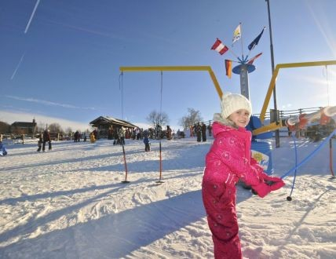
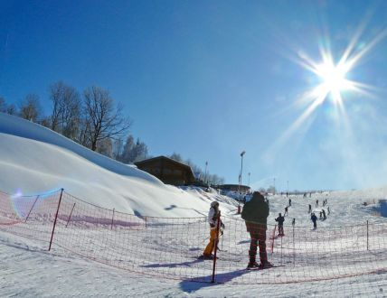
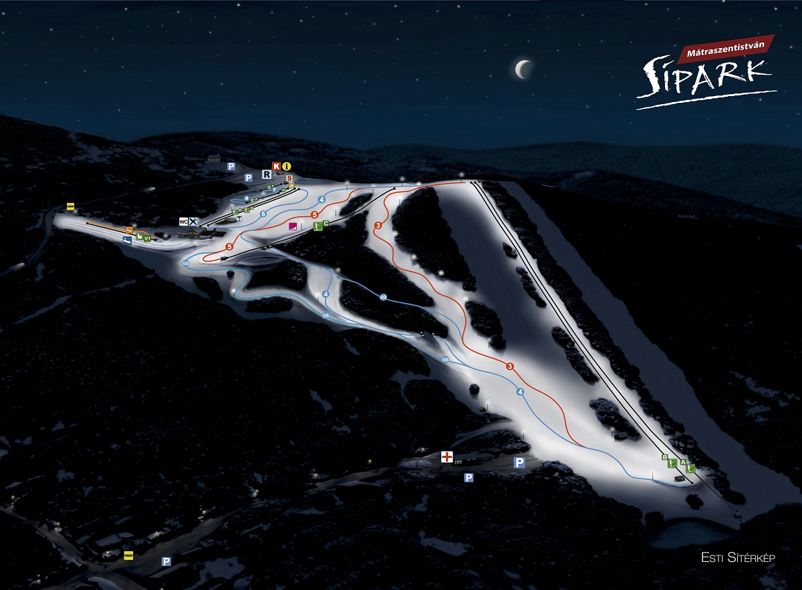

A síoktatóparkban
A hatékony sí- és snowboardoktatáshoz nem kellenek égig érő hegyek. Kevés utazással, költségkímélő módon a Mátrában is kipróbálhatod a téli sportokat, vagy akár fejlesztheted tudásodat is! Tanulásra a SíoktatóPark 800m-es tszf. magassága éppúgy megfelel, mint az Alpok völgyeiben fekvő, hasonló magaságban lévő bébi pályáké!
A SíoktatóPark a sípálya többi részétől elhatárolt speciális, síoktatásra kialakított terület, amely két teraszból áll. A pályák végében ellenlejtő van kialakítva, ahol könnyű megállni. A fejlődést olyan eszközök biztosítják, mint a 2 db „köteles” baby-lift, a "varázsszőnyeg", SunKid mesefigurák, Rotondo Síforgó, valamint kisebb-nagyobb tárgyak, amik a játékos oktatásban vesznek részt. A rönkből épült "mese ház" a síiskola bázisa. Itt található egy melegedő helység is, ami az átfázott síovisok azonnali menedékét biztosítja.
A középhaladókkal már a kis korongos sífelvonóra is kimerészkedünk, haladó szinten pedig a piros, fekete pályák is jönnek. Központi fekvésének köszönhetően jól megközelíthető a Hüttéből, és a sípályák irányából is, ami a családok együttlétét teszi lehetővé.
10 változatos sípálya
 Három falu - egy sízóna a Mátra szívében. A téli sport szerelmesei 10 változatos sípálya közül választhatnak. Izgalmas ívek a lendületes sízőknek, szelíd lankák a kényelmesebb síelőknek. A közel 4 km-es pályarendszeren, ratrakok és nagyteljesítményű hóágyúk dolgoznak folyamatosan a kíváló hóviszonyok és a hógarancia biztosításáért. A mátraszentistváni sípályarendszer kiváló minőségű gyepes hegyoldalon terül el. Tervezésénél kiemelt szempont volt a pályák változatossága, különféle nehézségi foka, s a gyönyörű panorámát kiegészítő hangulati elemek, mint pl. hidak, rönkházak, tavak létesítése. Az elmúlt évek fejlesztéseinek köszönhetően az ország legtöbb szolgáltatást nyújtó családi síterepévé vált.
Síliftek a síparkban
Az intenzív fejlesztéseknek köszönhetően vadonatúj és korszerű síliftek kerültek letelepítésre a Sípark területén az elmúlt évben. Jelenleg 8 db modern lift szogálja ki a sípályákat: 2 db új csákányos sílift melyek a neves osztrák Doppelmayr cég gyártmányai és sokak által ismertek az Alpok lejtőiről. Nagy szállító kapacitás és kényelmes lágy indítás jellemzi ezeket a lifteket. További 1 db lift a szlovák Tatra-Poma cég konstrukciója: 2007-ben átadott PFP tipusú korongos kislift. A korongos liftek is nagyon népszerűek a hazai sízők körében, egyszerű kezelhetőségük miatt. Mind a 4 liftre jellemző, hogy kényelmes fokozatmentes sebességszabályozóval rendelkeznek (un. frekvenciaváltóval), mellyel ideálisan beállítható a lift menetsebessége a sízők aktuális igényeihez! A leghosszabb pályáktól ( 1-es, 2-es, 3-as és 4-es ) két lift (egy-egy korongos és csákányos sílift) párhuzamosan szállítja fel a sízőket a csúcsra, összesen 1930 fő/óra teljesítménnyel. A síoktató teraszokat 2 db - szintén új - cseh gyártmányú Baby-lift I. (2005) és Baby-lift II. (2006) "köteles" (kézzel megfogható) szolgálja ki, továbbá a SíoktatóParkban egy SUNKID Mozgójárda (2013) (480 fő/óra) épült, amely a gyerekek és kezdők kedvenc tanuló liftje. Újdonság (2015) - új tányéros lift (G) (700 fő/óra) kapacitással a 6-os pályán.
Sítörténeti pillanat hogy hazánkban megépült az első új építésű négyszemélyes ülőlift a Síparkban. PANORÁMALIFT (2017)(H)(2200 fő/óra) - a legmodernebb technológiával ellátva a világ legnagyobb liftgyártójától az osztrák székhelyű Doppelmayr cégtől. Egyedi tervezés és kivitelezésnek köszönhetően a legbiztonságosabb lift hazánkban, felszerelve gyermek kiesés elleni lábtartókkal és a különböző színű ülésborításnak köszönhetően biztonságot ad a beszállóknak is.
Összességében a 8 db sílift szállító kapacitása 7310 fő/órát!
Választás a síliftek közül

- Panorámalift: 2200 Ft/fő/óra
- varázsszőnyeg: 480 Ft/fő/óra
- DOPPELMAYR III: 700 Ft/fő/óra